03. Computer-controlled Cutting
Menu
Laser Cutting
You need to find out the thickness of the meterial you cut

Set parametic and use it to design your project
design your project and make sure it can fit together (You need a 2D design instead of 3D one)
Parametic and the change
Go to the tools/MODIFY/Change Parametric to set the parametric of your project
use the parametric to design your project - just set it as the length of the line you need to set
set the parametric and use it as the width/height of the project -
so everytime you change the parametric, the project will change into what you want
I set many parametric like: the thickness, the bolster width, the baseboard width ...
And the following pictures show that if I change the thickness, the line that use the
parametric-thickness will change.
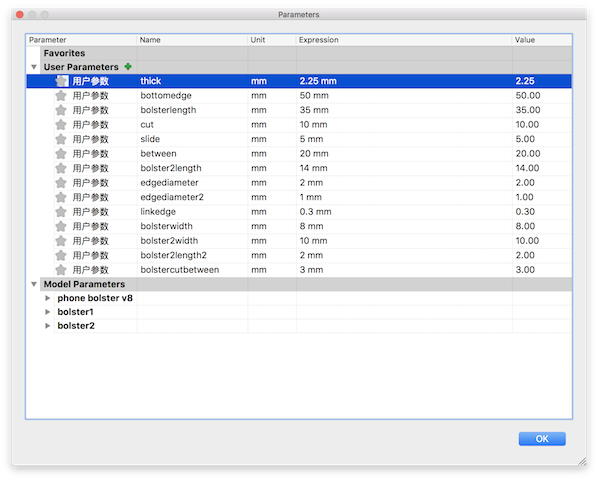
Change one parametic, and your project will change:(thick)(2.25mm to 6mm)
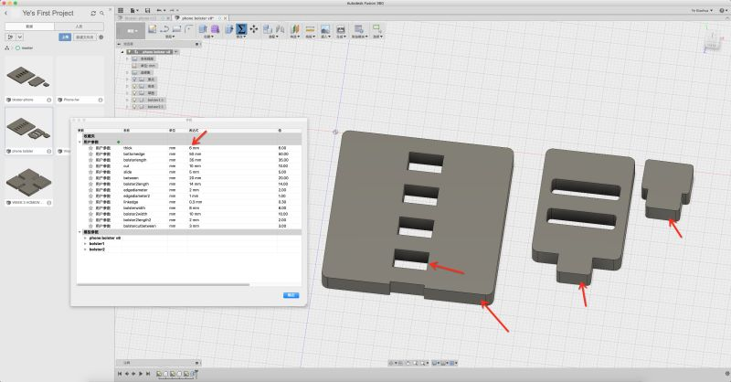
1. make a component and create a sketch.
2. Use different tools to design your project -
I use the 2-point rectangle, sketch line and Fillet to design my project
3. Make sure the conjecture part must use the parametric of the thickness of the material -
my material( ACRYLIC ) is 2.2mm
4. Extrude it and use the tool joint (Assemble - joint) to find out whether it can fit together.
5. Save the sketch ( yes, the sketch ) in dxg format.
6. try several times in laser cutting to find out which parametric will be perfect for the part to joint together.
Ready to cut

start cutting your project, but be careful *tips: the smell of the ACRYLIC after being cut is terrible!


Here has a short video about it:
Download my file:
Phone bolster - homework
Practice
1. set home of the laser cutter ( you only need to do it at the first time using the machine)
2. Make sure the paper prosperity and set it.
3. Choose different color if you want to cut different parts of your project in different way
(You may also select several parts to cut at one time and cut it with several times)
4. Set the Speed and Power of your cutting - to cut, you need to set the speed lower than 5 and
set the power higher than 60; to engrave, you need to set the speed higher than 20 and find out
what is the best choice of the percentage of the power.
5. different materials need different setting - to cut the ACRYLIC, you can set the power to 75, and
the speed to 2.0 ( may have a bit different while using different laser cutter. )
Vinyl Cutting
It is really easy to design it
1. enbed an image you want to cut with vinyl cutter
2. set it in proper size
3. use different tools to draw the out line of the image (Time consuming)
4. Set the paper size and put your project in proper place and sent it to the vinyl cutter
Use the CorelDraw to draw a vector image
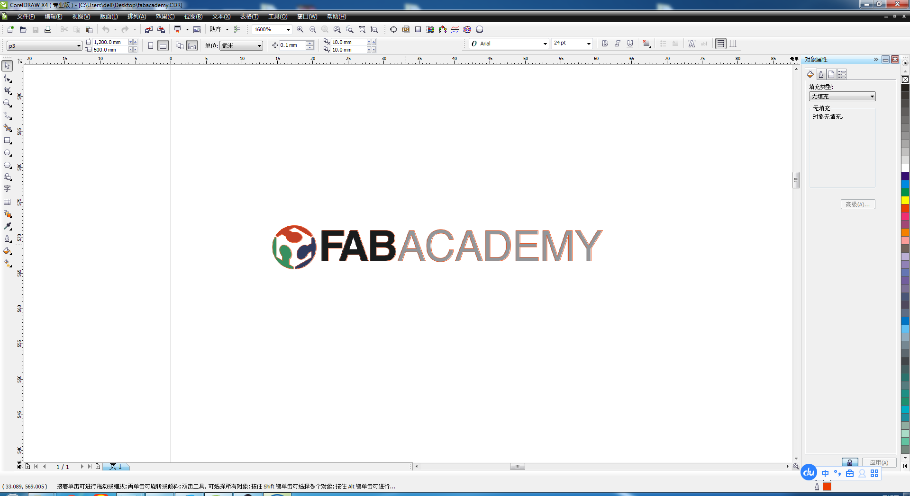Paint your image by using the tools
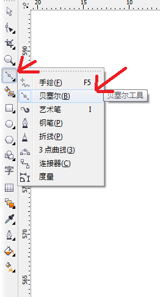 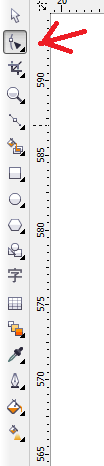Got it
Sent it to the vinyl cutter
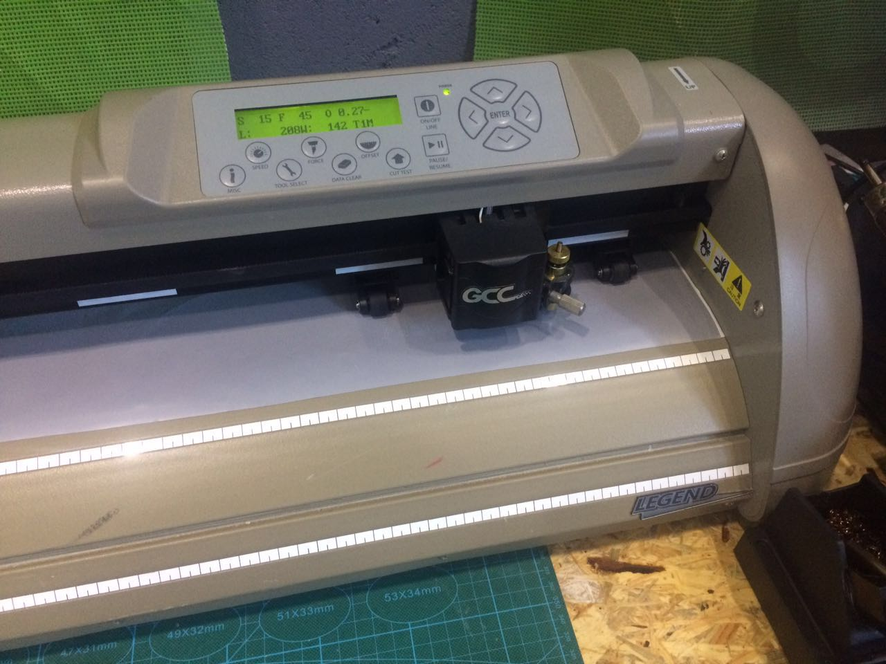 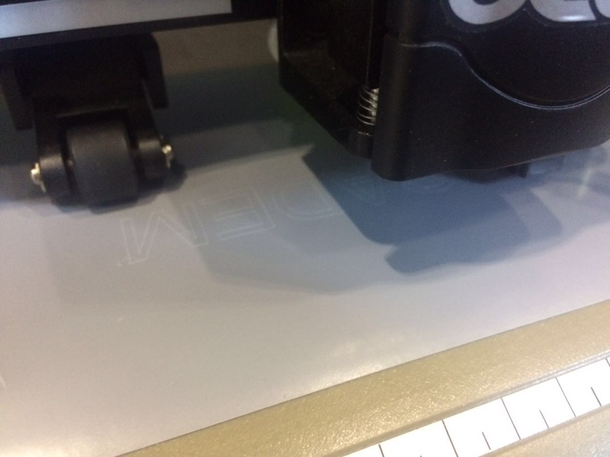 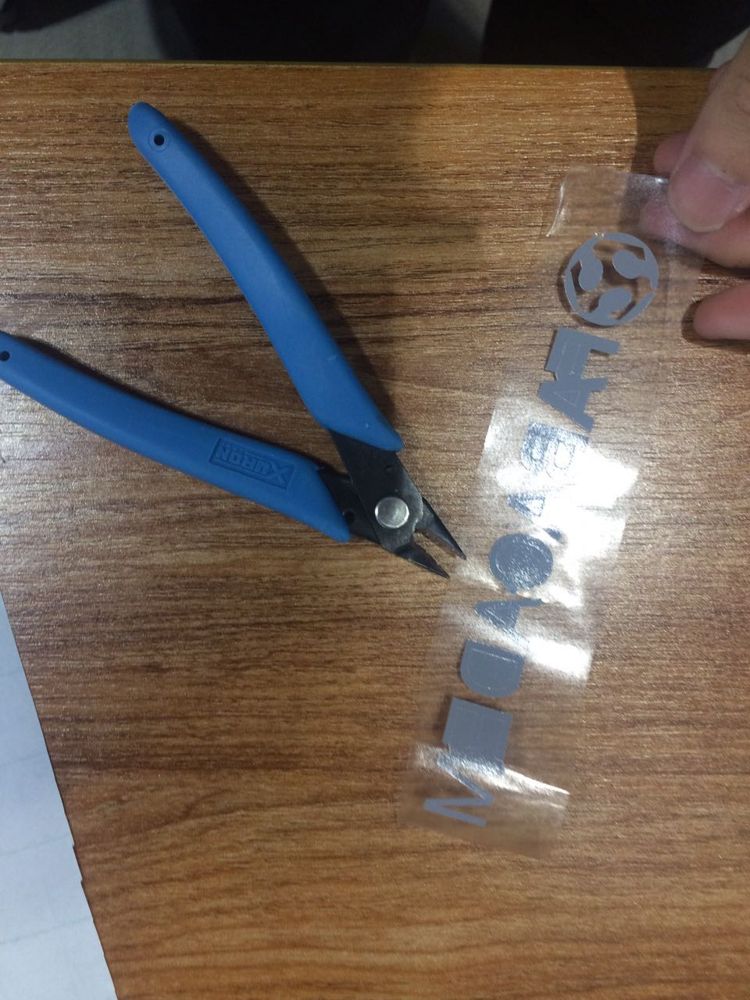Finish
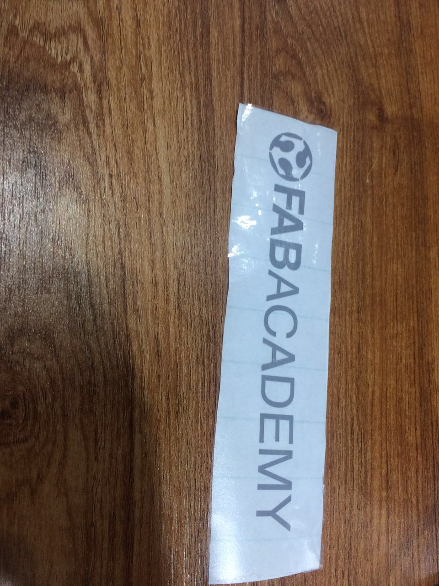 I recut one and use it to decorate my laptop
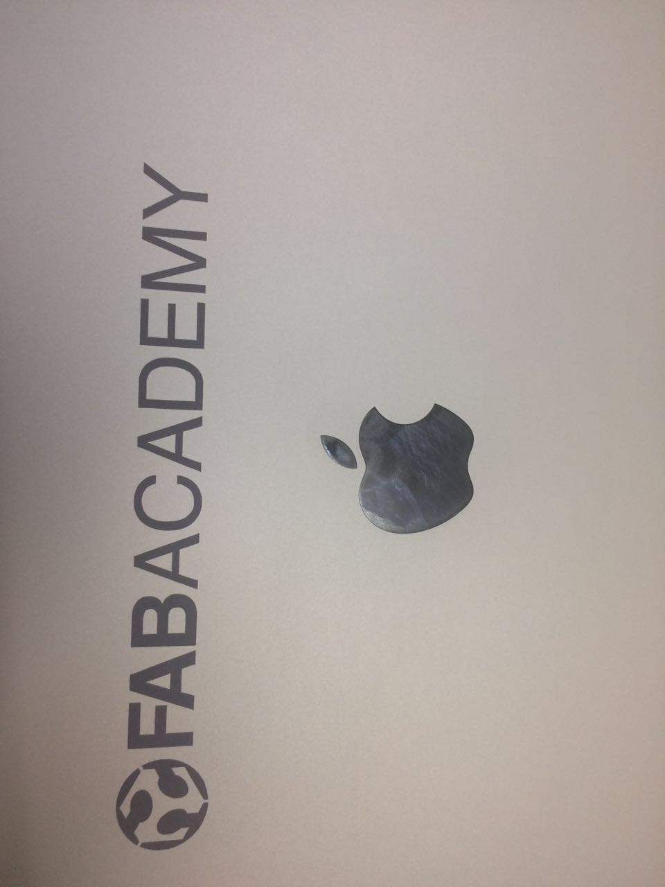
I recut one and use it to decorate my laptop
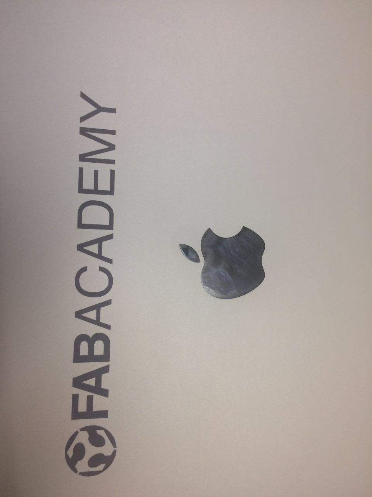
Group assignment - test
(I am the only one at the local lab, so this week assignment I finish it by myself)
Design a model and set different thing to cut in it
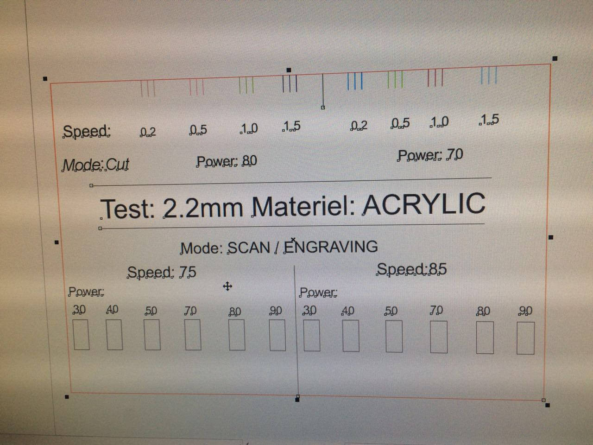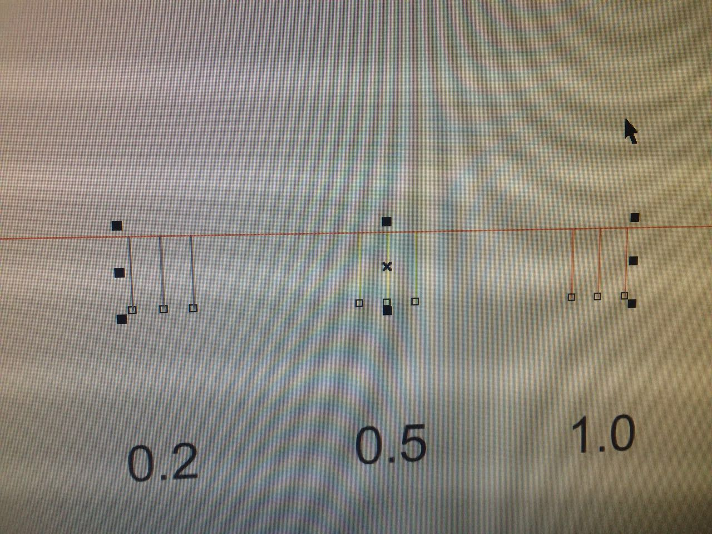
Use different colors in different parts and cut it at different times
I cut the part in 11 times - since I only set 2 color at one time -
so, if your want to test more, you mayput more time in it (I spend 3.5 hours designing and cutting it)
At last, you can get the testing board -
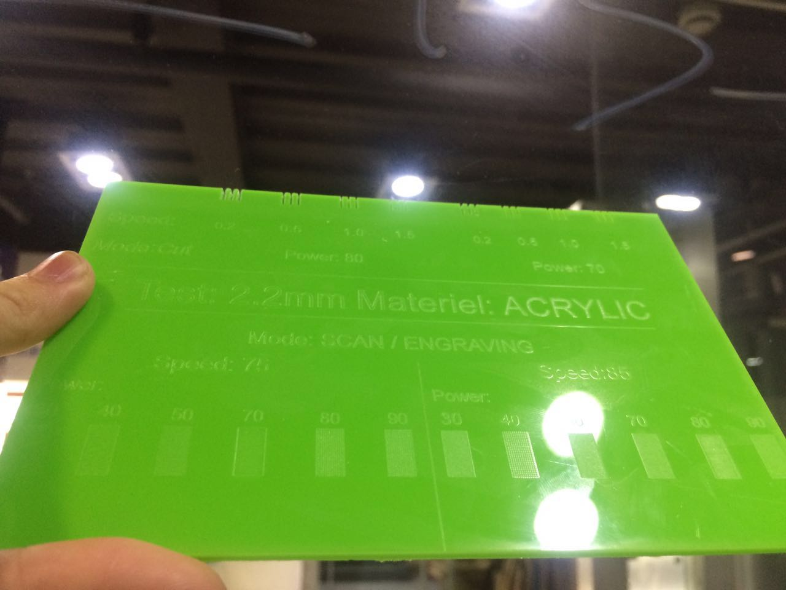
Here has a short video:
Contact me
e-mail: yexh00@icloud.com.